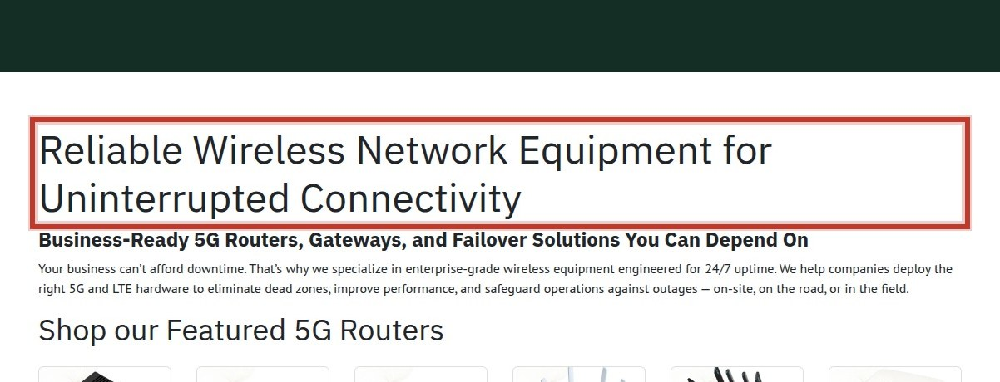
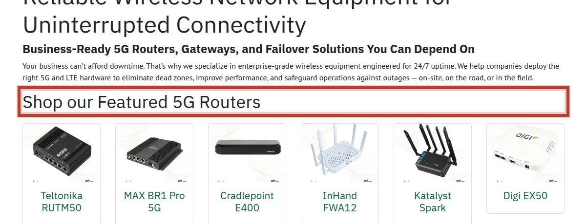
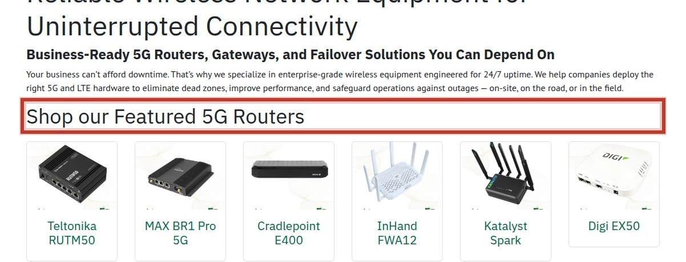
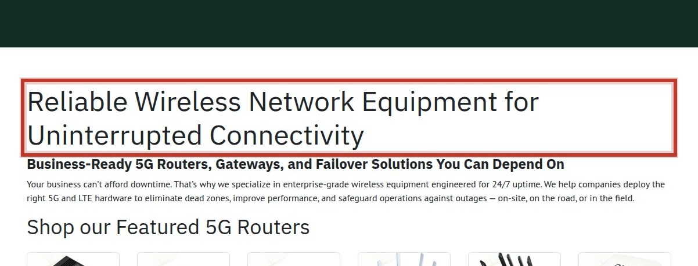

The most valuable conversion mechanism on this site is the product-to-cart-to-checkout path, but it is bleeding value because the cart page is a dead end with no cart contents or checkout button, and product pages show a placeholder price of $1, making it impossible for users to make a purchase decision.
4 of 6 standard security headers are absent, which weakens protection against XSS, clickjacking and downgrade attacks.

The homepage shows no sign of returns policy, guarantee, reviews, so a first-time visitor has nothing to offset purchase risk.
Your Cart
You have 2 items in your cart.
Subtotal: $248.00
Proceed to CheckoutContinue ShoppingThe cart page shows only navigation with no cart contents or checkout button, preventing users from advancing to purchase.

The product page displays a placeholder price of $1, making the purchase decision impossible and undermining trust in pricing accuracy.

Across crawled pages, no shipping costs, taxes, or other fees are mentioned, so visitors cannot anticipate total cost until later in the pur

The homepage shows no sign of returns policy, guarantee, reviews, so a first-time visitor has nothing to offset purchase risk.
Each surface starts at 100. The worst issue costs its full penalty — Urgent 25, High 12, Medium 5 — and each further issue costs 30% less than the one before, because the fifth problem on a page does not damage it as much as the first.
| Surface | Urgent | High | Score | Grade |
|---|---|---|---|---|
| Checkout & Cart | 1 | 0 | 75 | C |
| /Shop/Ex50-Wxs6-Glb-Digi-Ex50-5099 | 1 | 0 | 75 | C |
| Trust & Proof | 0 | 2 | 80 | B |
| Product Page | 0 | 2 | 84 | B |
| Site-Wide Security | 0 | 1 | 95 | A |
| Accessibility | 0 | 1 | 95 | A |
Grades: A 90+, B 80+, C 70+, D 60+, F below 60.
The sum of every finding's individual range. Each row is traffic × conversion × assumed lift band × order value:
| Finding | Lift band | Range |
|---|---|---|
| Missing security headers | 0.5–2.0% | 0.1–0.4/1k |
| Missing trust signals above the fold | 1.0–5.0% | 0.2–1.0/1k |
| Cart page dead end | 2.0–8.0% | 0.4–1.6/1k |
| Placeholder price on product | 2.0–8.0% | 0.4–1.6/1k |
| No shipping or fee disclosure | 1.0–5.0% | 0.2–1.0/1k |
| Missing trust signals above fold | 1.0–5.0% | 0.2–1.0/1k |
| Competing CTAs on product pages | 0.5–2.0% | 0.1–0.4/1k |
| Images missing alternative text | 0.5–2.0% | 0.1–0.4/1k |
No traffic or order-value figures were supplied, so the total is a per-1,000-visitor rate against an assumed 2% baseline. Supply real figures and this becomes a dollar range.
Caveat that applies to every row: Across 127,000 experiments, 12% produced a statistically significant improvement on the primary metric; a healthy programme win rate is 10-30%. These are prizes if changes work, not forecasts.
A verified finding was measured directly — real-user field data, security headers, accessibility defects counted in the markup — and is reproducible by anyone. Everything else is expert inspection: valuable, but a hypothesis until tested.